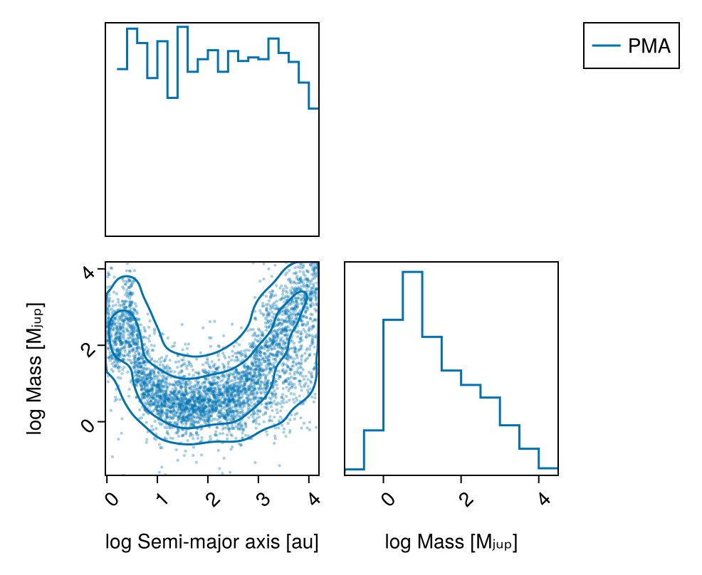
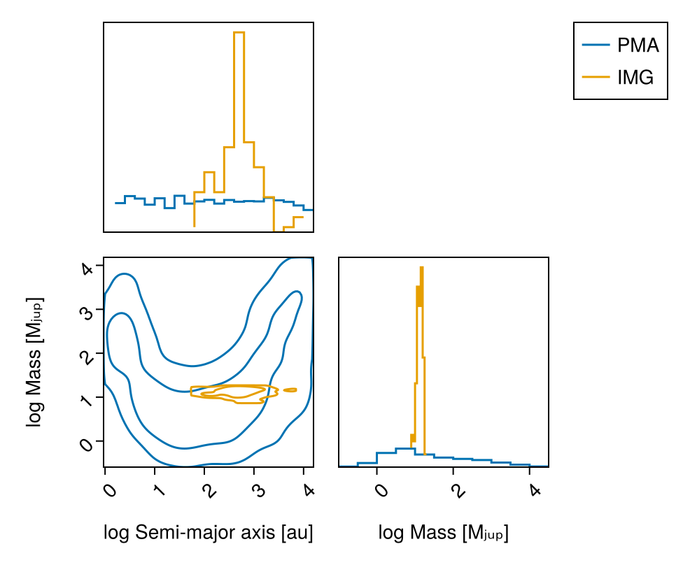
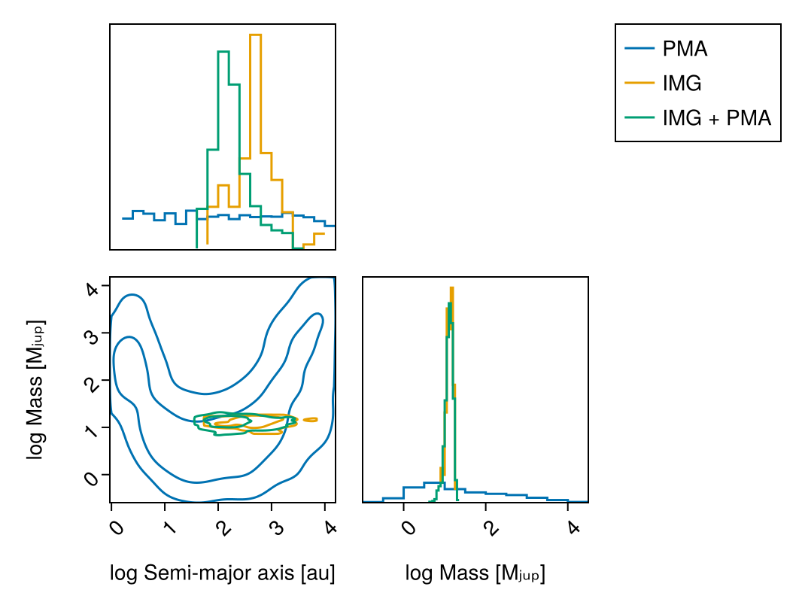

Detection Limits
This guide shows how to calculate detection limits, in mass, or in photometry, as a function of orbital parameters for different combinations of data.
There are a few use cases for this:
- Mass limit vs semi-major axis given one or more images and/or contrast curves
- Mass limit vs semi-major axis given an RV non-detection
- Mass limit vs semi-major axis given proper motion anomaly from the Hipparcos-Gaia astrometry
- Any combination of the above
The recipe is the same in every case: build a model in which the companion's brightness is derived from its mass through an evolutionary model, fit the data, and read off which masses survive.
The star is Gaia DR3 6166183842771027328 (HIP 65808), a ~32 pc solar-type dwarf. It is chosen because its proper motion is a non-detection: the HGCA χ² is 17.8 and every Hipparcos/Hipparcos–Gaia/DR3 channel sits within ~3σ of the long-term trend, so the PMA posterior below is a genuine upper limit — the broad envelope the other data sets are compared against. Do not retarget this page onto a star with a real astrometric companion (HD 91312, used by Fit Proper Motion Anomaly, has a 16σ anomaly): the PMA posterior then pins itself to the top of the mass prior and the page stops demonstrating anything.
So that the page builds offline it reads the Hipparcos–Gaia catalog subset and the cached scan-law forecast that ship with Octofitter's tests, together with the example L′ contrast image from Fitting Images — which is a stand-in, not a real observation of this star. For a real target you simply drop the catalog= and forecast_table= keywords and Octofitter fetches both itself.
using Octofitter
using OctofitterImages
using Distributions
using AstroImages
using CairoMakie
using PairPlots
using Statistics
using PigeonsPhotometry Model
We will need to decide on an atmosphere model to map image intensities into mass. Here we use the Sonora Bobcat cooling and atmosphere models which will be auto-downloaded by Octofitter:
const cooling_tracks = Octofitter.sonora_cooling_interpolator()
const sonora_temp_mass_L = Octofitter.sonora_photometry_interpolator(:Keck_L′)(::Octofitter.var"#model_interpolator#629"{Interpolations.FilledExtrapolation{Float64, 2, Interpolations.ScaledInterpolation{Float64, 2, Interpolations.BSplineInterpolation{Float64, 2, Matrix{Float64}, Interpolations.BSpline{Interpolations.Linear{Interpolations.Throw{Interpolations.OnGrid}}}, Tuple{Base.OneTo{Int64}, Base.OneTo{Int64}}}, Interpolations.BSpline{Interpolations.Linear{Interpolations.Throw{Interpolations.OnGrid}}}, Tuple{StepRangeLen{Float64, Base.TwicePrecision{Float64}, Base.TwicePrecision{Float64}, Int64}, StepRangeLen{Float64, Base.TwicePrecision{Float64}, Base.TwicePrecision{Float64}, Int64}}}, Interpolations.BSpline{Interpolations.Linear{Interpolations.Throw{Interpolations.OnGrid}}}, Float64}, Float64, Float64, Float64, Float64, Float64}) (generic function with 1 method)There is a single mass unit throughout, M⊙, and these interpolators take M⊙ by default. mjup is a plain multiplicative constant, so a Jupiter-mass threshold is written 10mjup, not 10 — a bare 10 means ten solar masses, which lands off the end of the grid and quietly returns NaN. Pass mass_unit=:Mjup to the constructors if you would rather keep a script in Jupiter masses.
Proper Motion Anomaly Data
We start by defining and sampling from a model that only includes the Hipparcos-Gaia proper motion anomaly.
HGCAObs is a helper over the joint Gaia-Hipparcos likelihood G23HObs, restricted to the six HGCA channels. It models the actual Gaia and Hipparcos scan epochs; freeze_epochs=true below fixes the epoch selection, which is much faster and is what makes a detection-limit sweep practical.
A = Body(
name="A",
variables=@variables begin
mass = system.M_pri
flux_G = 1.0 # the host defines the contrast scale in each band
flux_Hp = 1.0
end
)
B = Body(
name="B",
about=A,
variables=@variables begin
mass = system.M_sec # M⊙
a ~ LogUniform(1, 65)
e ~ Uniform(0,0.9)
ω ~ Uniform(0,2pi)
i ~ Sine() # The Sine() distribution is defined by Octofitter
Ω ~ Uniform(0,pi)
θ ~ Uniform(0,2pi)
epoch = 57423.0 # epoch of the Gaia measurement
flux_G = 0.0 # dark to Gaia...
flux_Hp = 0.0 # ...and to Hipparcos
end
)
gaia_id = 6166183842771027328 # HIP 65808 -- see the note above
pma = HGCAObs(;
gaia_id = gaia_id,
target = A,
blends = (B,),
ref = Barycentre,
freeze_epochs = true, # faster but approximate; set false for real use
)┌ Info: Removed forecast transits in data gaps of every applicable release.
└ n_removed = 1
┌ Info: Count of missed or rejected transits:
└ dr3 = 3
┌ Info: DR2/DR3 epoch selection
│ n2_win = 13
│ n_tail = 14
│ n_dr2_total = 13
└ n_dr2_distinct_range = (13, 13)The system block supplies the frame. G23HObs (and therefore HGCAObs) needs the reference point's proper motion, which means a full absolute frame: plx, ra, dec, pmra, pmdec, rv, ref_epoch. Declaring only some of them is a build-time error: Octofitter will not guess at half a frame.
cat = pma.catalog
HD_pma = System(
name="limits_pma",
bodies=[A, B],
observations=[pma],
variables=@variables begin
M_pri ~ truncated(Normal(0.95, 0.05), lower=0.1) # M⊙
M_sec ~ LogUniform(0.2mjup, 65mjup) # M⊙ -- note the units!
plx ~ truncated(Normal(cat.parallax, cat.parallax_error), lower=0.1)
ra = $(cat.ra)
dec = $(cat.dec)
# Wide priors on the centre-of-mass proper motion: the data constrain these.
pmra ~ Uniform(cat.pmra_dr3 - 100, cat.pmra_dr3 + 100)
pmdec ~ Uniform(cat.pmdec_dr3 - 100, cat.pmdec_dr3 + 100)
rv = $(isnan(cat.radial_velocity) ? 0.0 : cat.radial_velocity * 1e3) # m/s
ref_epoch = $(Octofitter.meta_gaia_DR3.ref_epoch_mjd)
end
)
model_pma = Octofitter.LogDensityModel(HD_pma)LogDensityModel for System limits_pma of dimension 11 and 6 epochs with fields .ℓπcallback and .∇ℓπcallback
Sample:
init_pma = initialize!(model_pma)
chain_pma, pt = octofit_pigeons(model_pma, n_chains=16, n_chains_variational=16, n_rounds=12)┌ Info: Starting values not provided for all parameters! Guessing starting point using global optimization:
│ num_params = 11
└ num_fixed = 0
┌ Info: Found sample of initial positions
│ logpost_range = (-8.514459211532149, 3.7653187816716382)
└ mean_logpost = -1.2513641950043357
[ Info: Sampler running with multiple threads : true
[ Info: Likelihood evaluated with multiple threads: false
[ Info: [limits_pma] observing_geometry = true (user)
[ Info: [limits_pma] barycentric_lighttime = true (user)
[ Info: [limits_pma] observing_geometry = true (user)
[ Info: [limits_pma] barycentric_lighttime = true (user)
────────────────────────────────────────────────────────────────────────────────────────────────────────────────────────
scans restarts Λ Λ_var time(s) allc(B) log(Z₁/Z₀) min(α) mean(α) min(αₑ) mean(αₑ)
────────── ────────── ────────── ────────── ────────── ────────── ────────── ────────── ────────── ────────── ──────────
2 0 2.05 2.67 1.57 1.49e+09 -3.38e+05 0 0.848 1 1
4 0 6.54 4.93 0.812 2.9e+09 -2.4e+03 0 0.63 1 1
8 0 7.19 6.16 1.52 5.64e+09 -281 1.78e-238 0.569 1 1
16 0 6.35 6.8 2.99 1.11e+10 -40 8.04e-27 0.576 1 1
32 0 7.89 7.25 5.84 2.19e+10 -15.1 2.28e-06 0.512 1 1
64 5 8.28 2.28 13.4 4.53e+10 -12.2 0.176 0.659 1 1
128 13 8.09 2.4 28.3 9.14e+10 -12.3 0.284 0.662 1 1
256 33 8.36 2.36 62.6 1.82e+11 -12 0.367 0.654 1 1
512 65 8.48 2.5 132 3.64e+11 -12 0.37 0.646 1 1
1.02e+03 136 8.36 2.44 254 7.27e+11 -12.1 0.401 0.652 1 1
2.05e+03 290 8.32 2.41 491 1.46e+12 -12.1 0.411 0.654 1 1
4.1e+03 639 8.21 2.39 985 2.91e+12 -12.1 0.436 0.658 1 1
────────────────────────────────────────────────────────────────────────────────────────────────────────────────────────Plot the marginal mass vs. semi-major axis posterior with contours using PairPlots.jl. Note that B_mass is in solar masses, so we convert for the plot:
pairplot(
PairPlots.Series(
(;
sma=log.(chain_pma[:B_a][:],),
mass=log.(chain_pma[:B_mass][:] ./ mjup),
),
label="PMA",
color=Makie.wong_colors()[1],
)=>(
PairPlots.Scatter(markersize=3,alpha=0.35),
PairPlots.Contour(sigmas=[1,3]),
PairPlots.MarginStepHist(),
),
labels=Dict(
:sma=>"log Semi-major axis [au]",
:mass=>"log Mass [Mⱼᵤₚ]"
)
)
Image Data
Now the same star, with an L′-band contrast image instead. This is where the flux/band unification pays off: the companion's brightness is a body variable, flux_L, derived from its mass — so the image constrains the mass directly.
download(
"https://github.com/sefffal/Octofitter.jl/raw/main/docs/image-examples-1.fits",
"image-examples-1.fits"
)
image = AstroImages.load("image-examples-1.fits").*2e-7 # units of contrast
img_dat_table = Table([
(image=AstroImages.recenter(image), platescale=4.0, epoch=57423.6),
])B_img = Body(
name="B",
about=A,
variables=@variables begin
mass = system.M_sec
# Calculate companion temperature from the cooling track and its mass
tempK = $cooling_tracks(system.age, mass)
# Calculate absolute magnitude
abs_mag_L = $sonora_temp_mass_L(tempK, mass)
# Deal with out-of-grid values by clamping to grid max and min.
# NB: the threshold is `10mjup`, not `10` -- masses are in M⊙.
abs_mag_L′ = if isfinite(abs_mag_L)
abs_mag_L
elseif mass > 10mjup
8.2 # jump to absurdly bright
else
16.7 # jump to absurdly dim
end
# Calculate relative magnitude
rel_mag_L = abs_mag_L′ - system.rel_mag + 5log10(1000/system.plx)
# Convert to contrast -- the same units as the image. This
# 10^(-0.4 Δmag) step is what makes `flux_L` a *linear* flux.
flux_L = 10.0^(rel_mag_L/-2.5)
a ~ LogUniform(1, 65)
e ~ Uniform(0,0.9)
ω ~ Uniform(0,2pi)
i ~ Sine()
Ω ~ Uniform(0,pi)
θ ~ Uniform(0,2pi)
epoch = 57423.6
end
)
image_data = ImageObs(
img_dat_table,
targets = (B_img,),
ref = A,
band = :L,
name = "imgdat-sim",
variables=@variables begin
# Optional parameters for marginalizing over instrument systematics:
# Platescale uncertainty multiplier [could use: platescale ~ truncated(Normal(1, 0.01), lower=0)]
platescale = 1.0
# North angle offset in radians [could use: northangle ~ Normal(0, deg2rad(1))]
northangle = 0.0
end
)[ Info: Measuring contrast from imageA_img = Body(
name="A",
variables=@variables begin
mass = system.M_pri
end
)
HD_img = System(
name="limits_img",
bodies=[A_img, B_img],
observations=[image_data],
variables=@variables begin
# age ~ truncated(Normal(40, 15),lower=0, upper=200)
age = 10 # Myr
M_pri ~ truncated(Normal(0.95, 0.05), lower=0.1) # M⊙
# Mass of the secondary.
# Make sure to pick only a mass range that is covered by your models.
M_sec ~ LogUniform(0.55mjup, 65mjup) # M⊙
plx ~ truncated(Normal(cat.parallax, cat.parallax_error), lower=0.1)
rel_mag = 5.65
end
)
model_img = Octofitter.LogDensityModel(HD_img)LogDensityModel for System limits_img of dimension 9 and 1 epochs with fields .ℓπcallback and .∇ℓπcallback
init_img = initialize!(model_img)
chain_img, pt = octofit_pigeons(model_img, n_chains=5, n_chains_variational=5, n_rounds=7)┌ Info: Starting values not provided for all parameters! Guessing starting point using global optimization:
│ num_params = 9
└ num_fixed = 0
┌ Info: Found sample of initial positions
│ logpost_range = (-10.425337993296313, 18.919832594217702)
└ mean_logpost = -6.1773599759987645
[ Info: Sampler running with multiple threads : true
[ Info: Likelihood evaluated with multiple threads: false
[ Info: [limits_img] observing_geometry = true (user)
[ Info: [limits_img] barycentric_lighttime = true (user)
[ Info: [limits_img] observing_geometry = true (user)
[ Info: [limits_img] barycentric_lighttime = true (user)
────────────────────────────────────────────────────────────────────────────────────────────────────────────────────────
scans restarts Λ Λ_var time(s) allc(B) log(Z₁/Z₀) min(α) mean(α) min(αₑ) mean(αₑ)
────────── ────────── ────────── ────────── ────────── ────────── ────────── ────────── ────────── ────────── ──────────
2 0 1.28 1.13 0.837 1.04e+07 -287 0 0.732 1 1
4 0 0.811 1.96 0.0183 1.02e+05 -198 7.17e-173 0.692 1 1
8 1 1.3 1.38 0.0385 1.88e+05 -0.413 0.487 0.702 1 1
16 2 1.96 1.5 0.0775 3.36e+05 0.0511 0.25 0.616 1 1
32 0 2.23 2.27 0.173 5.63e+05 3.85 0.0624 0.5 1 1
64 3 2.1 1.58 0.81 2.01e+07 9.61 0.087 0.591 1 1
128 4 2.18 2.43 0.549 1.82e+07 9.58 0.116 0.489 1 1
────────────────────────────────────────────────────────────────────────────────────────────────────────────────────────Plot mass vs. semi-major axis posterior:
vis_layers = (
PairPlots.Contour(sigmas=[1,3]),
PairPlots.MarginStepHist(),
)
pairplot(
PairPlots.Series(
(;
sma=log.(chain_pma[:B_a][:],),
mass=log.(chain_pma[:B_mass][:] ./ mjup),
),
label="PMA",
color=Makie.wong_colors()[1],
)=>vis_layers,
PairPlots.Series(
(;
sma=log.(chain_img[:B_a][:],),
mass=log.(chain_img[:B_mass][:] ./ mjup),
),
label="IMG",
color=Makie.wong_colors()[2],
)=>vis_layers,
labels=Dict(
:sma=>"log Semi-major axis [au]",
:mass=>"log Mass [Mⱼᵤₚ]"
)
)
Image and PMA data
Combining the two is just a matter of listing both observations on the system. Observations are a flat list and each names its own references, so there is nothing else to wire up.
pma_joint = HGCAObs(;
gaia_id = gaia_id,
target = A,
blends = (B_img,),
ref = Barycentre,
freeze_epochs = true, # faster but approximate; set false for real use
)
HD_both = System(
name="limits_both",
bodies=[A, B_img],
observations=[image_data, pma_joint],
variables=@variables begin
age = 10
M_pri ~ truncated(Normal(0.95, 0.05), lower=0.1)
M_sec ~ LogUniform(0.55mjup, 65mjup)
rel_mag = 5.65
plx ~ truncated(Normal(cat.parallax, cat.parallax_error), lower=0.1)
ra = $(cat.ra)
dec = $(cat.dec)
pmra ~ Uniform(cat.pmra_dr3 - 100, cat.pmra_dr3 + 100)
pmdec ~ Uniform(cat.pmdec_dr3 - 100, cat.pmdec_dr3 + 100)
rv = $(isnan(cat.radial_velocity) ? 0.0 : cat.radial_velocity * 1e3)
ref_epoch = $(Octofitter.meta_gaia_DR3.ref_epoch_mjd)
end
)
model_both = Octofitter.LogDensityModel(HD_both)
init_both = initialize!(model_both)
chain_both, pt = octofit_pigeons(model_both, n_chains=5, n_chains_variational=5, n_rounds=10)┌ Info: Removed forecast transits in data gaps of every applicable release.
└ n_removed = 1
┌ Info: Count of missed or rejected transits:
└ dr3 = 3
┌ Info: DR2/DR3 epoch selection
│ n2_win = 13
│ n_tail = 14
│ n_dr2_total = 13
└ n_dr2_distinct_range = (13, 13)
[ Info: [limits_both] observing_geometry = true (auto): no observation can report comparable predictions (ImageObs, G23HObs); nothing to measure, so keeping the correction on — no draws needed (seed 0xc70f177e5000001)
[ Info: [limits_both] barycentric_lighttime = true (auto): no observation can report comparable predictions (ImageObs, G23HObs); nothing to measure, so keeping the correction on — no draws needed (seed 0xc70f177e5000001)
[ Info: Preparing model
┌ Info: Determined number of free variables
└ D = 11
┌ Info: Determined number type
└ T = Float64
ℓπcallback(θ): 0.000076 seconds (42 allocations: 72.547 KiB)
∇ℓπcallback(θ): 11.104964 seconds (25.10 M allocations: 1.064 GiB, 4.69% gc time, 99.99% compilation time)
┌ Info: Starting values not provided for all parameters! Guessing starting point using global optimization:
│ num_params = 11
└ num_fixed = 0
┌ Info: Found sample of initial positions
│ logpost_range = (-7.564629791042277, 6.305895620227618)
└ mean_logpost = 3.4364835470863246
[ Info: Sampler running with multiple threads : true
[ Info: Likelihood evaluated with multiple threads: false
[ Info: [limits_both] observing_geometry = true (user)
[ Info: [limits_both] barycentric_lighttime = true (user)
[ Info: [limits_both] observing_geometry = true (user)
[ Info: [limits_both] barycentric_lighttime = true (user)
────────────────────────────────────────────────────────────────────────────────────────────────────────────────────────
scans restarts Λ Λ_var time(s) allc(B) log(Z₁/Z₀) min(α) mean(α) min(αₑ) mean(αₑ)
────────── ────────── ────────── ────────── ────────── ────────── ────────── ────────── ────────── ────────── ──────────
2 0 1.89 2.38 1.63 4.31e+08 -1.27e+06 0 0.526 1 1
4 0 2.29 2.6 0.366 8.02e+08 -9.14e+05 0 0.456 1 1
8 0 2.74 2.83 0.755 1.57e+09 -4.67e+05 0 0.381 1 1
16 0 3.09 2.96 1.56 3.22e+09 -8.11e+04 0 0.328 1 1
32 0 3.68 3.3 3.09 6.62e+09 -2.24e+04 0 0.225 1 1
64 5 3.77 2.67 7.23 1.41e+10 -4.06 0 0.284 1 1
128 9 3.48 2.47 12.8 2.88e+10 -3.67 0 0.339 1 1
256 15 3.77 2.54 29.2 5.65e+10 -4.13 0 0.299 1 1
512 24 3.76 2.64 55.5 1.13e+11 -4.46 0 0.289 1 1
1.02e+03 57 3.72 2.57 108 2.25e+11 -3.98 2.38e-91 0.301 1 1
────────────────────────────────────────────────────────────────────────────────────────────────────────────────────────Compare all three posteriors to see limits:
vis_layers = (
PairPlots.Contour(sigmas=[1,3]),
PairPlots.MarginStepHist(),
)
pairplot(
PairPlots.Series(
(;
sma=log.(chain_pma[:B_a][:],),
mass=log.(chain_pma[:B_mass][:] ./ mjup),
),
label="PMA",
color=Makie.wong_colors()[1],
)=>vis_layers,
PairPlots.Series(
(;
sma=log.(chain_img[:B_a][:],),
mass=log.(chain_img[:B_mass][:] ./ mjup),
),
label="IMG",
color=Makie.wong_colors()[2],
)=>vis_layers,
PairPlots.Series(
(;
sma=log.(chain_both[:B_a][:],),
mass=log.(chain_both[:B_mass][:] ./ mjup),
),
label="IMG + PMA",
color=Makie.wong_colors()[3],
)=>vis_layers,
labels=Dict(
:sma=>"log Semi-major axis [au]",
:mass=>"log Mass [Mⱼᵤₚ]"
)
)
For a systematic version of this analysis — injecting companions on a grid of mass and separation and measuring what fraction are recovered — see Detection Completeness Mapping.